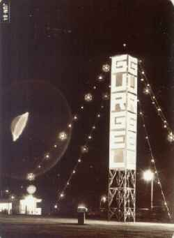

L'ovni observé au-dessus de Sao Paulo
A Sao Paulo (Brésil), photo (ci-contre).
A Grand Callargues (Gard),
2 témoins voient au-dessus de leur véhicule une masse noire de 50 m de diamètre. Celle-ci semble flotter à 400 m
du sol et se déplace par bonds successifs. Cette masse sombre vient ensuite se placer sur le coté de la voiture
et suivra le véhicule pendant 10 km environ. Aucun bruit, aucune odeur ne seront remarqués et cette masse
disparaîtra soudainement à une vitesse très importante en émettant à sa base une lumière bleutée
GEPAN: PAN classé C.
1er essai de la fusée chinoise Longue Marche 3.
Les communications de l'avion du président
Reagan sont coupées pendant plusieurs heures.
Le général Robert Bond est tué lorsque le MIG 23 qu'il pilote au-delà de
Groom Lake s'écrase sur Little Skull Mountain dans le
NTSPeebles, Curtis: Dark Eagles, Presido Press, 1995.
Au-dessus de 2 communes de l'Isère, plusieurs témoins voient un phénomène triangulaire
très brillant reste stationnaire et peut être observé entre 15 mn et 1 h 35. 2 témoins verront l'élévation et la
disparition progressive de l'objet après l'apparition d'une fumée épaisse
GEPAN: PAN classé C.
Ovni supposé, photographié en juin près de Rio Claro (São Paulo, Brésil)

...
Mort de Gordon L. Gray, dernier membre vivant de la première promotion du
MJ-12.
D'après certaines thèses, le MJ-12 s'aperçoit
de son erreur quant à la confiance qu'il a accordé aux extraterrestres.
Des milliers de témoins rapportent la présence d'objets énormes, silencieux, planant au-dessus Westchester Wing,
dans la vallée de l'Hudson (état de New York), avec des lumières rotatives. Parmi ces témoins se trouvent des
météorologues, des journalistes et même des officiers de police. Les autorités affirment pourtant que le phénomène
observé se limite à quelques avions en formation. Les films vidéos tournés ce jour-là par des habitants de la
région contestent la version officielle des événements.